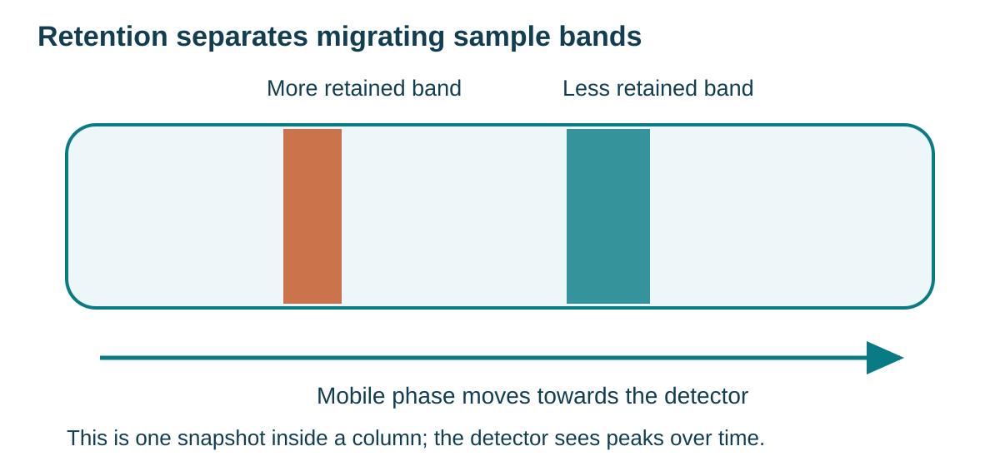
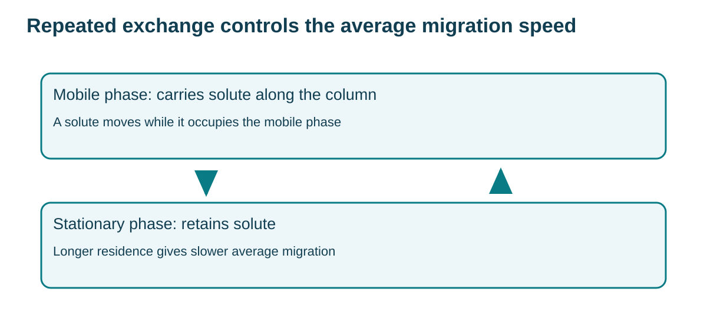
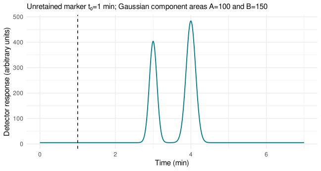
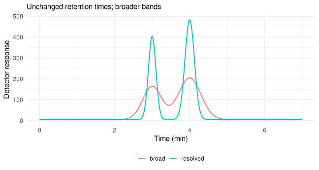
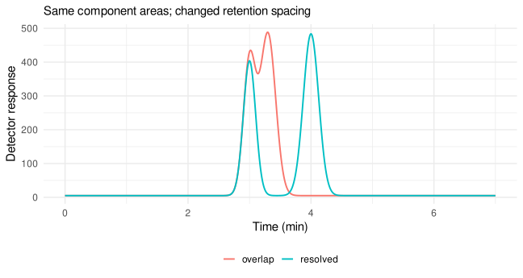
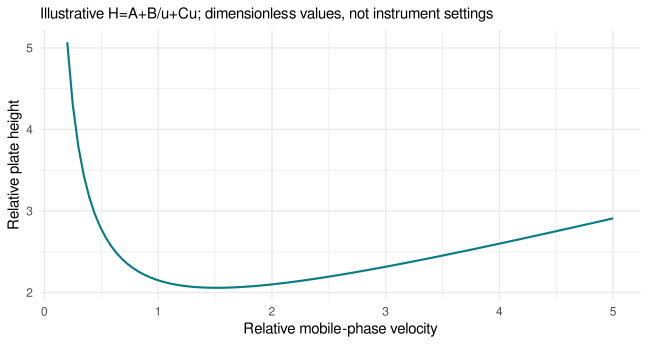

Separation principles
Retention, band width and selective quantification
About this lecture
Separate a mixture before assigning a detector response to an analyte.
- Connect phase exchange to retention.
- Calculate retention factors and resolution with defined widths.
- Decide what a chromatogram can support.
A column picture is not a chromatogram
This is a position snapshot inside a column. The less-retained band is nearer the outlet.

Repeated exchange sets the average migration speed
Solute travels with the mobile phase and is delayed by stationary-phase residence.

Now read a detector trace
The chromatogram records response versus elapsed time.
The dashed reference is the unretained transit time t_0=1.00 min.

Subtract transit before describing retention
k=(t_R-t_0)/t_0. For A, (3.00-1.00)/1.00=2.00.
For B, k=3.00; relative selectivity is \alpha=k_B/k_A=1.50.
Area, height and amount are different quantities
A broader peak can be lower while retaining the same integrated area.
Area still needs an appropriate calibration to become an amount.

Resolution needs a defined width
R_s=2(t_{R2}-t_{R1})/(w_1+w_2) for baseline widths.
For this pair: 2(4.00-3.00)/(0.40+0.50)=2.222.
Changing spacing changes separation
The overlap run retains both component areas but has R_s=0.667.

Changing width also changes separation
The broad run keeps the original retention times but has R_s=0.909.
An integration boundary is not new selectivity
Drawing a split between maxima does not independently identify each contribution.
Why a single threshold cannot prove purity
At fixed R_s, a much larger neighbouring component can contribute more to the target window.
Efficiency and selectivity solve different problems
For an ideal Gaussian, N=16(t_R/w_b)^2.
Narrower bands improve efficiency; changed interactions can alter selectivity.
Velocity trades off different broadening mechanisms
Conceptual model: H=A+B/u+Cu.

Use familiar R operations for the new quantities
peaks |> mutate(k = (t_r_min - t0_min) / t0_min)
Keep run, compound and width definition attached to the calculation.
Predict before exploring
Double both baseline widths without changing retention times.
What happens to R_s, height and complete component area?
Return to the analytical claim
Expected retention supports identity under matched conditions; it is not conclusive by itself.
Calibration, adequate separation and sample preparation must all support the reported amount.
Next: choose the transport and detector
Exercise, embedded exploration and worked solutions · Practice quiz
GC and HPLC build on these same retention and width ideas.